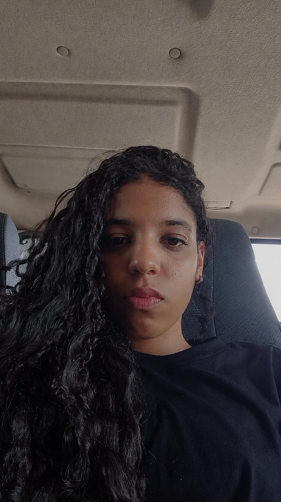
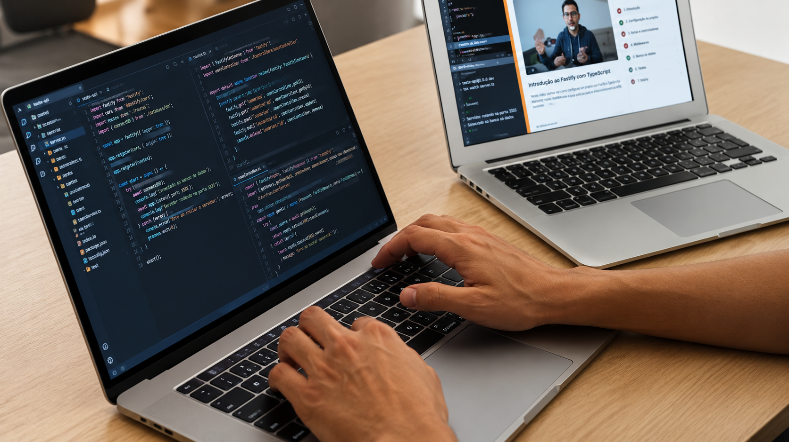
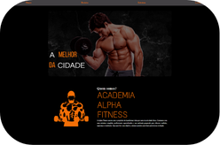
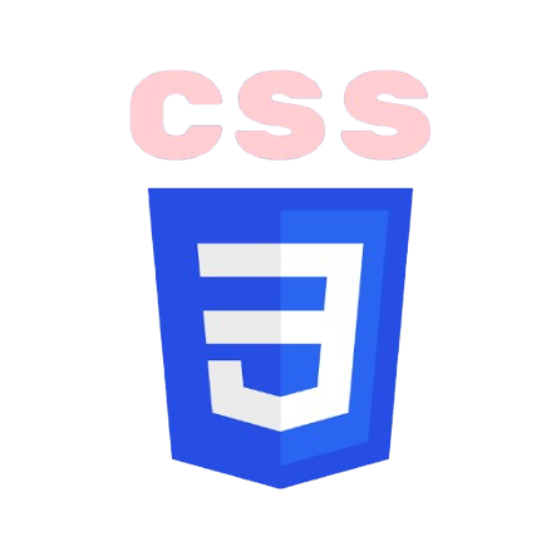
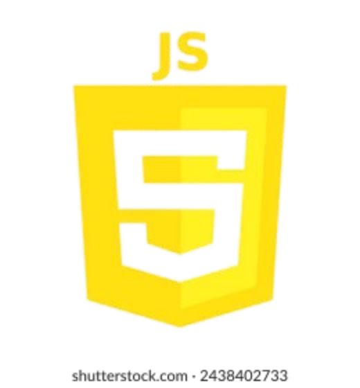
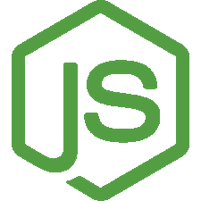

Desenvolvedora Web
Cursando Engenharia de Software


Olá! Sou estudante de Engenharia de Software e desenvolvedora web em constante aprendizado. Gosto de transformar ideias em soluções digitais, criando sites que unem funcionalidade, organização e um visual moderno. Trabalho com tecnologias como HTML, CSS e JavaScript, e estou sempre buscando aprimorar meus conhecimentos para desenvolver projetos cada vez melhores. Meu objetivo é ajudar empresas e empreendedores a fortalecer sua presença digital por meio de sites responsivos, intuitivos e pensados para atender às necessidades de cada cliente. Acredito que cada negócio tem sua própria identidade e que um bom site deve refletir isso. Por isso, valorizo a criatividade, a dedicação e a atenção aos detalhes em cada projeto. Estou pronta para transformar ideias em projetos digitais e crescer junto com cada novo desafio!

landing page - Academia ficticia


